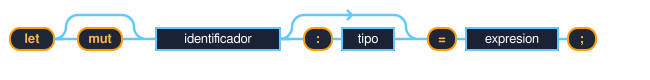

Diagrama de sintaxis vectorial SVG nativo para la declaración de variables en Rust

Palabra clave obligatoria que inicia la declaración de una variable en el alcance actual.
Palabra clave opcional (vía de desvío). Si se omite, la variable es inmutable por defecto.
El nombre de la variable asignado por el desarrollador (ej: edad, nombre).
Anotación de tipo explícita opcional (ej: : u8). Si no se especifica, Rust infiere el tipo.
Operador de asignación obligatoria del valor a la variable.
El valor asignado (ej: 5, "Ferris", 10 + 20).